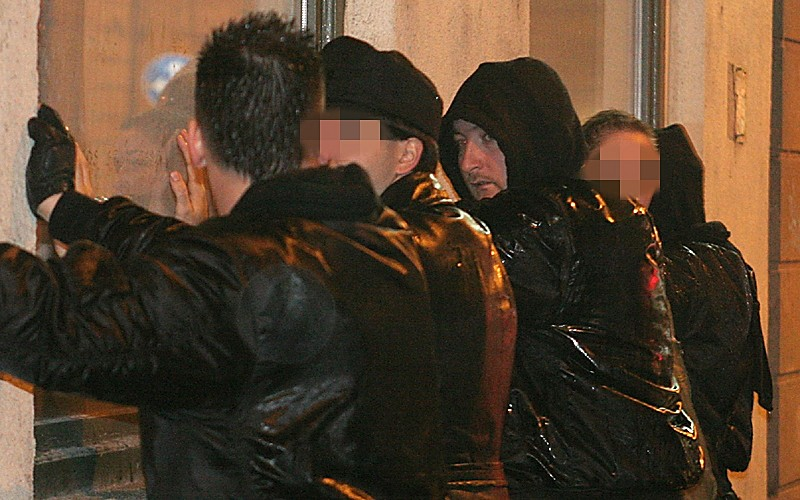

Tomcat
beszámolójához kapcsolódva szeretnék
mesélni a Bombagyár olvasóinak a tegnap estémről, amelyet néhány rendőrbarom tett
emlékezetessé és azért egy kissé fárasztóvá is.
A Szabadság téri élő
Bombagyár-felvétel előtt egy közeli boltba indultunk ásványvizet vásárolni a műsorhoz. Két
utcával a tértől egy rendőrcsoport igazoltatott mindenkit, aki arra járt. Megállítottak
mindenkit, a falhoz vagy a rendőrautóhoz tepertek, majd tüzetesen átvizsgáltak. Az indok
nagyjából annyi volt, hogy magyar vagy, azt meg itt nem szabad. Ezzel alapvetően még nagy
baj nem is lett volna, de az eljárás során tanúsított ellenséges hangnem miatt nagyon
hamar ledobta az ékszíjat az agyam.
Ekkor még velünk volt a barátnőm is,
segített nekünk az adáshoz Pokolgép szállításában. Természetesen velem kezdték az
eljárást, mert látták rajtam, hogy én nácirasszistafasiszta vagyok, meg bevetési kesztyűm
van. Érdekes, de a rendőröknek éppen azok a dolgok tetszenek, amelyek nekik is vannak:
hárman külön kérdezgették, hogy miért kell nekem olyan szilikonos bevetési kesztyű,
amilyet ők is hordanak. Értelemszerűen azért, mert jól lehet vele ütni és a levágott
ujjvégek miatt a ravaszt is meg lehet fogni. A válasz viszont nem bűvölte el a rend
éber őreit.
Egy remek hátmasszázs után megállapították, hogy nem vagyok olyan
hülye, hogy pont ma fegyverrel flangáljak, úgyhogy elpittyedt a biztos urak szája széle.
Végül azonban mégis volt egy kis fogásuk: néhány hónapja vettem a barátnőmnek egy KO
gázsprét, hogy lefújja vele a cigányokat. Bár azt nem vették észre az okos úriemberek,
hogy az ideiglenes személyi igazolványa már több mint egy hónapja lejárt, a peppernek
nagyon örültek. Nézegették, forgatták, egyik kézről a másikra adták, sőt egy rendőrkocsit
is leintettek miatta. Közöltem velük, hogy ez a töltősúly alatt van, úgyhogy most
gyorsan adják is vissza. Érezték, hogy nem nyertes a helyzet. Bár jómagam is rendőrségi
jelvénytokban hordom az irataimat, az nem volt baj. A barátnőmnek vett jelvény miatt
viszont üvölteni kezdtek. Öten körbeállták, majd a legnagyobb hangú (észrevettétek,
hogy mindig a legnagyobb paraszt szar a rangidős?) üvöltözni kezdett vele, hogy most
bevihetné, elgázosíthatná, meg minden, amit el tudunk képzelni, és még annál is
rosszabb.
Itt lett elegem: üvöltözzön otthon a ribanc feleségével, aztán dugja
föl neki a gumibotot, de ne az én barátnőmmel. Amikor ott tartott, hogy nemcsak őt, de a
„rendvédelmi szerv jelvényét” eladót is megbünteti. Itt már üvöltöttem.
Elmagyaráztam neki a hamis jogcímhasználat szabálysértésének feltételeit, meg akkor már
azt is, hogy mi a szabálysértés, ők meg néztek pislogva. Ha nagyon mélyen belenézel
egy ilyen nagyképű idióta szemébe, valósággal el lehet veszni a végtelennek tetsző
sötétségben. Végül megkértem őket, hogy ne állják öten körbe a barátnőmet, mert még a
végén fölcsinálják véletlenül.
– Mi nem a REBISZ vagyunk, nézze –
üvöltött a rendőr, és a kabátjelvényére mutatott. – Olvassa!
Nézegettem a
csúnya felvarrót, majd fölolvastam a rajta lévő szót: „Közrendvédelem”. Mire
ő:
– Nem! Közrendvédelmi Főosztály – s a Főosztályt annyira
hangsúlyozta, mintha minden betűnél nőne tőle néhány millimétert a pöcse.
Az adás
vegyesre sikeredett. Rettenetesen kevés időnk volt (másfél–két órányi zsidózást
harminc percbe süríteni nem túl egyszerű dolog), meg valamelyest elvette a kedvünket, hogy
a Magyar Önvédelmi Mozgalom szervezői nem tiszteltek meg azzal, hogy a megbeszélt időben
már üzemkészen adják át a színpadot, de jól sikerült, a gyurcsánytakaroggyozás meg
mindig sikert arat. Csak a Romantikus Erőszak dobosa miatt gondolkodtam el a magyarság
életképességén, de ő biztosan egy hangos kisebbség; mi nem úgy láttuk, mintha a tömeg
vele együtt le akarta volna rugdosni a Bombagyár stábját a színpadról „mocskos
médiasztár” jelmondattal.
Már jócskán
besötétedett, amikor az első könnygázgránát becsapódott. Az egyébként békés és
jogszerű tüntetés az Opera felé ballagott, amikor a Nagymező utca szélén egy háromsoros
rendőrsorfalba ütköztünk. A Bombagyár korábbi értesülései szerint a bevetni kívánt CR gáz
karcinogén (rákkeltő), ezért aggódtam egy kicsit, de a várakozásaink szerint a
kirobbantott botrány után nem merték bevetni (mivel a CR vízre hevesebben reagál,
megpróbáltam kimosni a szememből, ez pedig sikerült, tehát maradt a CS).
A
Bajcsy-Zsilinszky út és Podmaniczky utca sarkán álltunk, amikor befutott valaki a
MÖM-től, és mesélte, hogy Toroczkai Lászlót a rendőrsorfal behúzta, majd a pajzsokkal
addig verték, amíg ki nem tört egy foga, aztán bilincsben elvezették. Közben néhány
rendőr, meg rendőrkocsi lézengett a Bajcsyn, néztem is, hogyan keveredettek ide. Amikor
már itt is gyűlt a tömeg, a rendőrök megint vadállat módjára viselkedtek: a gyalogosok
lámpája zöldet mutatott, amikor az álló autó hirtelen (bármilyen fény- és hangjelzés
nélkül!) csikorgó kerékkel megindult és a tömeg közé hajtott, majd követte egy
rendőrségi kisbusz is. Egy srácot néhány centi választotta el az ütközéstől, az idősebbeket
pedig a fiatalabbak húzták félre. Egy házaspár két kisgyermekükkel valahogyan errefelé
keveredtek és földbe gyökerezett lábakkal figyelték az eseményeket. A provokáció sikeres
volt, gratulálok a rendőröknek: a következő buszokat már kőzápor fogadta, és több
vezetőfülkébe került kő, miután a tömeget fölhergelte a támadás.
A Nyugati
pályaudvarnál, a Skála Metró mellett találkoztam ismét Tomcattel, aki éppen az ott álló
Békés megyei rendőröknek magyarázott a Szent Korona tanról, Magyarországról és a
jelenlegi helyzetről. Csatlakoztam hozzá s most már mint a Bombagyár szerkesztősége kértük
őket, hogy legközelebb legalább a Himnusz alatt álljanak vigyázzba, ha azt énekli nekik
a tömeg.
Csak egy órával később
tartóztattak le.
Visszatértünk a Nagymező utcába, mert néhányan itt láttunk egy
lakást, amely erkélyére lőttek a rendőrök, mert október huszonharmadika alkalmából a
lakók egy nemzeti lobogót lógattak le onnan. Meglepődve tapasztaltuk, hogy a
Nagymező–Dessewffy utcasaroknál az oldalára borított autókat találtunk. Az egyikben
még a lopásgátló is bátran villogott, nehogy elvigye valaki a
járművet.
Nézegettük a kocsikat, az egyikből még a benzin is ömlött, mire hozzánk
futott egy férfi, az egyik kocsi tulajdonosa. Készítettünk vele egy rövid riportot:
elmondta, hogy bár ő nem volt itt, de beszélt szemtanúkkal, akik elmondták, hogy a három
autóból legalább kettőt a vízágyús kocsi borított föl (érdemes a médiában megjelent
képeken megnézni az izraelből várásolt kocsik elején látható barikádkotrót, az képes
erre). Mivel az autók egyéb részei nem voltak betörve, illetve minden, a tüntetésen akár
hasznossá válható tárgy a járművekben maradt, valóban hihetőnek tűnt a sztori. Aztán
az egyikünknek föltűnt, hogy az egyik nem fölborult kocsi is megsérült: az oldalán
éppen a vízágyús kocsi összetéveszthetetlen nyomát láttuk.
Tomcat lehajolt,
hogy lefényképezze. Ekkor több busszal Terminátor-ruhás rohamrendőrök érkeztek, majd
azonnal a falhoz nyomtak. Ez már a harmadik igazoltatásom volt, és érdekes módon ennyi
idő alatt még a nevem sem változott meg. Az eljáró rendőrök között volt a barátnőmmel
üvöltöző paraszt Dunába való is, meg egy második igazoltatásnál megismert zsaru is,
aki nagyon tisztességesen viselkedett velünk. Ő a pozitív kivétel volt, bár itt, a
tömeggel ő is túl keményen beszélt. Igaz, ekkor még nem tudtuk, hogy gyanúsítani akartak
minket valamivel.
Nagyjából másfél órát állhattunk a jéghideg falnak
támaszkodva, miközben ömlött ránk a jéghideg eső. A vesém már hasogatott, de
alapvetően az első félórában remekül szórakoztunk, csak azt sajnáltuk, hogy szövegben
egyszerűen visszaadhatatlanul groteszk ez a helyzet: csak egy mondat, hogy ennyit álltunk
ott, pedig valamivel több dolog játszódik le ilyenkor egy emberben. Miközben mi
támasztottuk a falat, balról inkognitóban figyelő gárdistákat, míg jobbról a média szorgos
munkatársait láttam. Tudtuk, hogy a fölborított autókat nemcsak ők, de a rendőrök is ránk
akarják kenni, úgyhogy elegünk volt már belőlük. Pedig még be sem vetették
magukat.
Persze az azért érdekes kérdés, hogy valóban komolyan gondolták-e, hogy
fölborítottunk néhány autót, majd hat órával később visszatértünk lefényképezni őket,
de talán ők egyáltalán nem is gondolkodtak.
Több mint egy óra álldogálás után
(miközben nem közölték velünk, hogy miért vagyunk eljárás alatt, illetve azt, hogy
egyáltalában ez milyen eljárás) a velünk együtt elfogott Kata nevű lány összeesett.
Teljesen átázott és átfagyott, de többszöri kérésünkre sem volt hajlandó egy takarót
adni neki vagy a rendőrautóba ültetni a szolgálók és védők közül egy sem. Tomcat
üvölteni kezdett a rendőrrel; mindketten megfordultunk. Valahogyan egy férfit föl kellene
háborítania egy ilyen tisztességtelen eljárás. A mögöttem álló rendőr megbökött a
gumibotjával, de jeleztem neki, hogy az őt világra szaró édes anyukája ánuszát bökdösse,
ne engem, és komolyan vehette, mert nem csinálta többet.
Amikor elvezettek, még
bilincset sem kaptunk. Tomcat másik autóba került. Én két tizenhét év körüli sráccal és
egyik társunkkal kerültem egy rabszállítóba. A srácokat nem ismertük, de a beszélgetés
során kiderült, hogy ők csak mögöttünk jöttek, mert látták, hogy fotózunk és riportot
készítünk, ezért kíváncsiak voltak.
Az autóban ismét arról beszéltem, amiről már
sokszor a nap folyamán: míg '56-ban a rendőrség a nép oldalán állt, ma már ez nincsen
így. Már hosszú évek óta nincsen így, mert a kommunisták nagyon jól megtanulták, hogy a
fegyveres szervezetek képviselőit el kell távolítani a „halandóktól”, a
civilektől. Külön kocsmájuk van, külön sporttelepük, lovardájuk, meg minden, amit akarsz.
Nincsen kapcsolat: ők nem értenek minket, és utáljuk egymást. A minket kísérő rendőr
üvöltözni kezdett, biztosan fölforrósította a processzorát a sok információ.
A VII.
kerületi rendőrkapitányságon még hosszú órák vártak ránk a Darth Vaderek között, mire
sorra kerültünk. Közben megérkezett dr. Gaudi-Nagy Tamás és Morvai Krisztina is, hogy
segítsenek nekünk. Nagyjából este kilenc órakor kezdték meg az eljárást, és hajnali egy
környékén kerültem csak fogdába. A rendőrök nagyon vicces emberek voltak: röhögtek az
összeesett lányon (mondván nekik még tíz kilónyi vizet föl is szívott a páncéljuk, mégis
kibírták), meg dr. Gaudi-Nagy Tamáson. Gaudi ügyvéd úron többféle kitüntetés is
lógott, ezt meg ők viccesnek tartották. Amikor ügyvédi beszélőre vitte Katát az ügyvéd úr,
a rendőrparancsnok megjegyezte, hogy akármeddig lehetnek bent, talán még meg is
„kupakolja” az ügyvéd a tizenhét éves lányt. Épületes emberek voltak, de
nagyon-nagyon büszkék.
Elvették mindenemet, csak a jelvényemet vihettem a fogdába. A
Nagy-Magyarország alakú kitűzőmet érdeklődve forgatta a rendőrtiszt. Fölolvasta a rajta
szereplő mondatot („Nem felejtünk!”), majd megvonta a vállát. „Nem
értem, hogy mi ez”, azzal többi közé dobta. Pedig a Rendészeti Szakközépiskolában is van
történelemóra. Végül fogdába kerültem. Fél óra múltán, amikor éppen elaludtam volna,
megjelent ugyanaz a rendőrnő, aki bekísért, és szólt, hogy jöjjek. Gondoltam, biztosan
ki akarnak hallgatni, mivel már csak néhány óra van hátra, és lejár a határidő. De
nem: bár csak harminc perce vették el a holmim az övemmel és a cipőfűzőmmel együtt,
most mindent visszadtak. „Ön szabad” – mondták, én meg megkérdeztem,
azért mégis mivel vádoltak. Nem volt válasz, úgymond, nem tudják, hisz nem voltak ott,
nem ők hoztak be. Valami vétséggyanút hallottam korábban, de nem tudni, hogy mi
történt.
Álldogáltunk a rendőrség aulájában, beszélgettünk, majd lassan mindenki
megérkezett. Morvai Krisztina szerint legalább háromszázezer forint és kamatai járnak a
jogtiprásért, a rendőrök meg elérték, hogy az eddig részben azért rendőrpárti
Bombagyár-szerkesztőség már nem annyira retten meg az egyenruhások felé hajított
Molotov-koktélokon.
Talán már említeni sem érdemes, amit éppen egy éve már leírtam: az
agressziót a rendőrség kezdte, és a tüntetők reakciója közel sem állt arányban a
rendőrökével. Akárhogyan is próbáltunk kommunikálni a pártpolip rendvédelmi karjával, ők
süketek. Ma már csak az rendőr, aki komolyan gondolja, hogy „nem kellene az
utcára menni”, meg ők hősök, mert elkapják a rablókat, és ennyi az összes, amire
az esküjük kötelezi őket. Már nem hiszek abban, hogy itt lehetséges bármilyen
együttműködés. A hatalom katonáit le kell győzni, majd felelősségre kell vonni. Ami
mellettünk áll, az a becsület és az értelem. Ezekből tegnap este az általam megismert új
arcok óriási hiányban szenvedtek. Becsület és ész, ez kell nekünk.
SrácKristóf nevű
olvasónk küldi a gyárlakóknak Illyés Gyula saját előadású versét mintegy gondolat-
ébresztőként.
 Letöltés
Letöltés